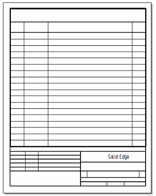

Table sheets
Table sheets are working sheets that are inserted automatically into the sheet tab tray to contain multi-page parts lists and tables. You can use table sheets to organize long parts lists and tables into booklets for easier printing. Table sheets can be blank sheets, or you can use a table sheet template with a defined border and title block.
-
You can specify that table sheets are created for a new table or parts list when you select the Create new sheets for table option on the Location tab in the Properties dialog box for the table.
-
You can use the Show sheet backgrounds option on the Location tab to control what is displayed on the table sheets when they are generated.
Table sheet tab names show the table group number and the table sheet number within the group, for example, Table1:1. When multiple sheets are inserted for the same table, the second sheet tab name is Table1:2.
To learn how to use table sheets when creating parts lists and tables, see Create new sheets for tables.
You can use options on the View tab, Solid Edge Options dialog box (Draft) to specify how the table sheets are named and arranged in the sheet tab tray. For example, you can use the Number sheet groups separately option to keep table sheets together in sheet tab tray.
Creating a table sheet template
If you want to define a template for table sheets, you can use this process:
-
Design a parts list title block that is sized for A Tall (8.5 x 11 inch) paper.
-
Place it on a working sheet, and then use the Background tab in the Sheet Setup dialog box to associate a background sheet with the template.
-
Save the template with the background sheet to the C:\Program Files\Siemens\Solid Edge 2023\Template\More folder.
